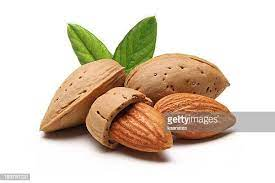

Commertial Varieties of Fruits
Fruits play important role in providing food and nutritional security as well as sustainable
income to farmers.Presently, area under fruit crops at 6.7 milloin hactare with a production of
76.4 million tonnes,which contributes to about 30% share in total production of horticulture
produce.Production of fruit is expected to reach about 115 million tonnes by 2017.Fruit crops,
material .Mistakes commited during the initial establishment of orchard cannot be corrected and will
cause serious loss to production and productivity.
ALMOND
Types of Almonds:
| Name of Variety | Salient Features | Recommended Areas |
|---|---|---|
| Shalimar | Trees are medium and spreading,mid blooming , nuts are long in size and bold with tapering at curved pointed apex,Nut colour is creamy brown to slightly whitish , soft shelled and mid season maturity. | Jammu & Kashmir,Uttarakhand |
| Mukhdoom | Trees are large and spreading, mid blooming,nuts are broad at shoulder with bold and slightly curved at apex.Nut colour is brown to creamy whitish , soft shelled and mid to late season maturity. | Jammu & Kashmir,Uttarakhand | Drake | Trees are low in vigour,spreading,mid blooming,Nuts are small to medium in size ,bold and roundish with pointed apex and light creamy whitish brown in colour.Semi soft shelled and mid season maturity. |
